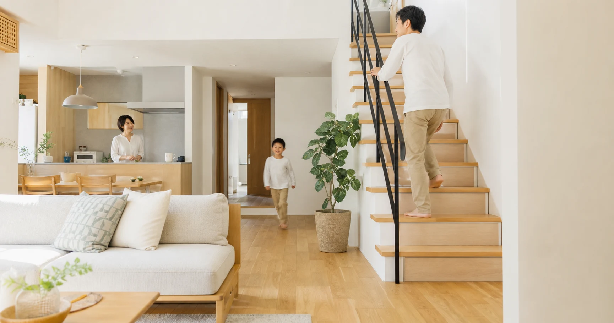
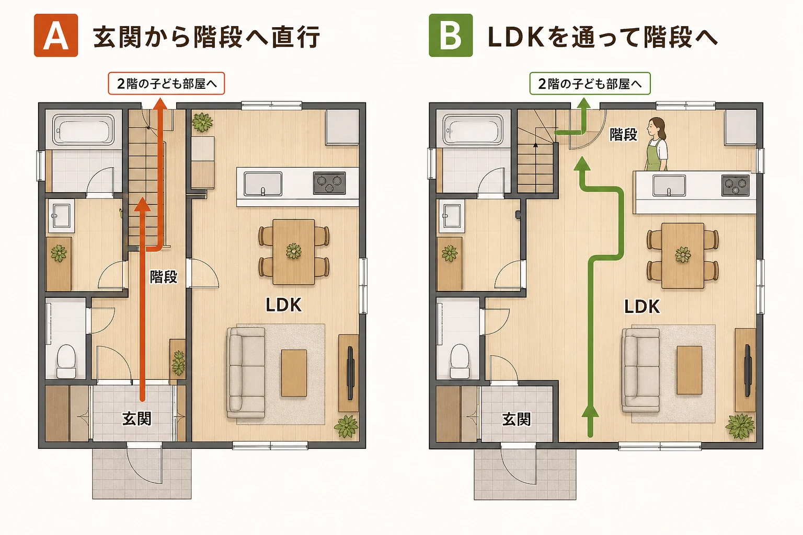
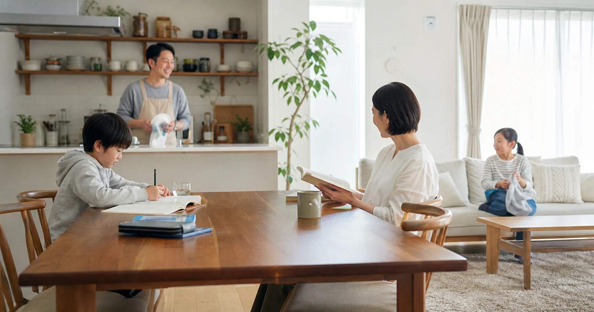
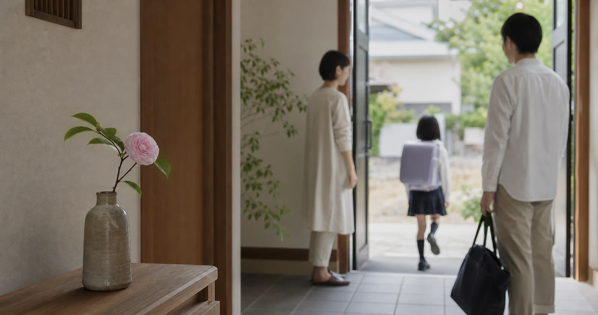

「学校から近いこと」「子ども部屋は2階に、それぞれ独立した個室で」「勉強に集中できるよう部屋にはテレビもエアコンも」――どれも子どもを思う親心そのものです。ただ、住まいと子どもの育ちの関係を考えるようになって、私はこう思うようになりました。"よかれと思って整えた理想の条件"が、子育ての面ではむしろ落とし穴になっていることが、けっこうある。この記事を通して問いかけたいのは一つです。あなたの家は「家族のコミュニケーションが自然に生まれる住まい」になっていますか？
1. "理想の子ども部屋"という、やさしい落とし穴
「2階に独立した子ども部屋」を考えるときは、部屋の広さだけでなく、玄関からそこへ向かう途中を見ます。玄関脇の階段なら、帰宅後すぐ自室へ行けるため、生活時間が違う家族には便利です。一方で、LDKの奥に階段があれば、家族が同じ空間を通る機会は増えます。どちらが正解という話ではありません。一人で落ち着ける場所を確保しながら、食事や入浴、外出・帰宅のどこで家族が顔を合わせたいかを決めることが大切です。
2. 家族の絆を育む間取りの考え方
間取りが直接、子どもの成長に悪影響を与えると証明したデータはありません。そのうえで下の図では、同じ規模の家で二つの帰宅動線を比べました。Aは玄関から階段へ直行し、LDKを通りません。Bは玄関からLDKへ入り、キッチンや食卓の近くを通って階段へ向かいます。Bなら必ず会話が生まれるわけではなく、Aでも温かな家庭は築けます。図面に帰宅・入浴・食事の線を重ね、家族が自然に会える場所と、静かに通りたい時間の両方を確認するための比較です。

Aは玄関から階段へ直行。BはLDKを通って階段へ。間取りの優劣ではなく、家族が顔を合わせる場所の違いを比べる図です。
3. 家族の気配が、会話のきっかけをつくる
四十万靖さんと渡邊朗子さんの『頭のよい子が育つ家』（2006年）は、難関中学合格者の自宅を調査し、その暮らしぶりに見られた共通点を紹介した一冊です。リビングやダイニングなど、家族の気配が感じられる場所で過ごす姿も取り上げられています。ただし、勉強時間、学習環境、家庭での関わり方など、成績に関係する要素は数多くあります。この本は「この間取りなら成績が上がる」という証明ではなく、家族が自然に顔を合わせる居場所を考える手がかりとして読みたい一冊です。
4. 玄関に、季節へ気づく小さなきっかけを置く
玄関は、家族が毎日通る場所です。季節の花や木の実、行事にまつわる小物などを一つ置けば、親子で四季の変化について話すきっかけになります。飾ること自体に特別な効果を求めるのではなく、暮らしの中で家族が同じものを見て、言葉を交わせる小さな接点として考えます。

5. 家族の接点は「動線」でつくれる
階段をリビングの中に配置する「リビング階段」、キッチン近くの家族で使えるスタディコーナー、吹き抜けや開放的なLDK（リビング・ダイニング・キッチン）。子ども部屋も、可動式の間仕切りで緩やかに区切り、成長に合わせて調整できれば、一人の時間と家族の時間を選びやすくなります。音や冷暖房の効き方、来客時の視線にも配慮し、家族ごとの暮らし方に合うかを確かめましょう。
6. もう一つの接点――「本のある家」という話
経済協力開発機構（OECD）の国際学習到達度調査（PISA）における読解力は2018年に504点・15位まで落ち込みましたが、2022年調査では516点・OECD加盟国中2位まで回復しました。一方、1か月に1冊も本を読まない「不読率」は、高校生で2025年に55.7%と半数を超えています。家庭の蔵書と学力にも相関が見られますが、これは相関であって因果ではありません。大事なのは、本が「コミュニケーションのある家」の一側面だということ。リビングに本があり、わからないことをその場で家族に聞ける――それが会話を呼び込む小道具になるのです。
7. 結論――「コミュニケーションが生まれる家」をつくる
- ①家族が顔を合わせやすい動線をつくる。子ども部屋は、一人の時間と家族の時間を選べる場所に。
- ②会話のきっかけを置く。玄関の季節のしつらえや、家族で使う小さな居場所を暮らしに取り入れる。
- ③家族の集まる場所に、本を置く。読み聞かせも、家族で本に触れるきっかけの一つになります。
- ④大人自身が、その空間で本を楽しむ。親が本を開いている姿は、子どもが本に触れるきっかけの一つになります。

よくある質問
結局、家づくりで一番大事なことは何ですか？
＋
「家族のコミュニケーションが自然に生まれる住まいか」という一点です。成績・読書・感性はその土台の上に乗るもの。立派な子ども部屋より、家族が気配を分け合える設計を優先してください。
間取りが子どもの育ちに影響することはありますか？
＋
間取りが直接の原因になると証明したデータはありません。ただ、玄関から自室へ直行できる動線は、家族が顔を合わせる機会を少なくしやすい面があります。
子ども部屋は個室で与えないほうがいいのでしょうか？
＋
個室そのものが悪いわけではありません。ポイントは、個室が「家族から切り離される装置」にならないこと。可動間仕切りで成長に合わせて調整できる設計が現実的です。
玄関に季節のものを飾ると、本当に子どもの感性が育ちますか？
＋
飾りと子どもの成長に直接の因果があるとは言えません。季節の変化に親子で気づき、言葉を交わす小さなきっかけとして取り入れる考え方です。
うちの子が全然本を読みません。読解力が心配です。
＋
本を読むことを強制するのではなく、図鑑やマンガも含め、家族が集まる場所に手に取りやすい本を置く方法があります。大人が本を楽しむ姿も、本に触れるきっかけの一つになります。
出典・参考資料を見る
- 四十万靖・渡邊朗子『頭のよい子が育つ家』（日経BP社、2006年／文春文庫版）
- 文部科学省・国立教育政策研究所「PISA2018／PISA2022のポイント」（2019年・2023年公表）
- 文部科学省「全国学力・学習状況調査」（2023年、家庭の蔵書数と正答率）
- 全国学校図書館協議会「第70回学校読書調査」（2025年）

この記事を書いた人｜エイスケ
1986年生まれ、40歳。実家の建築業・不動産に10年間従事したのち、教育の世界へ。住宅と教育、両方のプロの視点から「豊かな暮らし」をテーマに忖度なく切り込みます。※本コラムは筆者個人の見解・経験に基づくものです。最終的な判断は各分野の専門家にご相談ください。